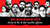
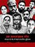

“ये देश हम सबका है.”
हरियाणा के फरीदाबाद जिले के बल्लभगढ़ में रहने वाले लियाकत अली कहते हैं. ये वही बल्लभगढ़ है, जहां 16 साल का जुनैद रहता था और जिसकी दिल्ली के सदर बाजार से घर लौटते वक्त ट्रेन में भीड़ ने बड़ी बेरहमी से हत्या कर दी थी.
उसका सिर्फ एक गुनाह था- वह मुस्लिम था.
‘इंडिया स्पेंड’ की रिपोर्ट के मुताबिक, साल 2010 से गोरक्षा से जुड़ी हिंसा के मामलों में मारे गए लोगों में 86 फीसदी मुस्लिम थे. ऐसा लगता है, जैसे गोरक्षा के नाम पर मॉब लिंचिंग किया जाना अब ‘सामान्य’ बात हो गई है. राजनीतिक भाषणों से होती हुई, ट्विटर टाइम लाइन और हमारी रोजमर्रा की जिंदगी में नफरत फैल गई है.
आखिर भारत के मुसलमानों के खिलाफ समुदाय के स्तर पर रिश्ते, सामाजिक संबंध, सोच, यहां तक कि कारोबारी संबंधों में असहिष्णुता ने कैसा असर डाला है? क्या यह ध्रुवीकरण को बढ़ावा केवल टीवी स्टूडियो और अखबारों तक ही सीमित है या फिर वाकई में सामाजिक वातावरण में डर कायम है?
द क्विंट ने इस सवाल का जवाब ढूंढने के लिए देशभर में कई शहरों और गांवों के लोगों से बातचीत की.
लोग क्या कहते हैं, ये जानने के लिए लोकेशन पर क्लिक करें
"बहुत से लोग मुसलमानों से असहज महसूस करते हैं. मुझे नहीं पता कि वो ऐसा क्यों महसूस करते हैं.”
ऐसा कहना है राजस्थान के बीकानेर में रहने वाले मोहम्मद इमरान का. उन्होंने बताया कि किस तरह पिछले कुछ सालों में भारत में कुछ ऐसी धारणा बनाई गई, जिसके नतीजे में मुसलमानों को 'बुरे लोगों' के रूप में देखा जाने लगा है.
लोगों के बर्ताव में बदलाव आया है. डर का माहौल है. असहिष्णुता बढ़ रही है और नफरत फैलाने वाली ताकत बढ़ रही है. ज्यादातर मुस्लिम यह मानते हैं कि मॉब लिंचिंग की घटनाएं बढ़ने के बाद वे लगातार डर के साये में रह रहे हैं.
कुछ लोगों के लिए रोजमर्रा की जिंदगी में मॉब लिंचिंग का सबसे गहरा असर गैर-मुस्लिमों की सोच में बदलाव के रूप में होता है. 'गोरक्षा' की राजनीति में ये साफ तौर पर दिखता है.
कुछ मुसलमान पूछते हैं कि ज्यादातर राजनीतिक दल गोरक्षा के नाम पर हिंसा करने वालों की स्पष्ट रूप से निंदा करने से क्यों बचते हैं? कुछ ने कहा कि इतना सांप्रदायिक ध्रुवीकरण तो पिछली एनडीए सरकार के दौरान भी नहीं हुआ था.
महाराष्ट्र के मालेगांव निवासी इम्तियाज अंसारी गुस्से के साथ कहते हैं:
"हमें एक लफ्ज बोलने से पहले भी सोचना पड़ता है."
ऐसी ही भावना बीकानेर के मोहम्मद इमरान की भी है. वह बताते हैं कि कैसे सरकारी दफ्तरों में, एक बुरका पहने औरत को या फिर दाढ़ी वाले शख्स को शक की नजर से देखा जाता है. दफ्तरों में बैठे कर्मचारी उनके साथ बाकी लोगों की तरह सहयोग भरा व्यवहार नहीं करते हैं.
डर के साये में रहने का क्या मतलब है? इस बात को महसूस करना कि जिस समुदाय को आप बहुत अच्छी तरह से जानते हैं, वही आपके खिलाफ हो जाए, यहां तक कि वो आपको 'राष्ट्रद्रोही' समझने लगे?
राजस्थान के बीकानेर के रहने वाले मजीद अकेले नहीं हैं, जो टीवी डिबेट देख रहे हैं और ये महसूस कर रहे हैं कि आज के भारत में लोगों की सोच किस तरह सांप्रदायिक होती जा रही है. वे कहते हैं:
“मैं एक टीवी डिबेट देख रहा था, जिसमें उन्होंने कहा कि जो देश में हो रहा है, वह ठीक नहीं है. मुस्लिम शख्स को केसरिया पटका पहनने पर मजबूर किया गया.”
मीडिया- टीवी की चर्चाएं, अखबारों की रिपोर्टें और सोशल मीडिया की सामग्री- डर और नफरत का माहौल बनाने में निर्णायक भूमिका निभाती हैं. जिस तरह से मॉब लिंचिंग की घटनाओं की रिपोर्टिंग की जाती है, उससे तय हो जाता है कि भारत के मुसलमान आज के समाज में ‘अपनी जगह’ कहां देखते हैं.
लेकिन जो ‘तथ्य’ दर्शकों तक पहुंचते हैं, क्या उन्हें वाकई में तथ्य कहा जा सकता है?
‘फेक न्यूज’ और बेहद आपत्तिजनक वॉट्सऐप सामग्री की शेयरिंग के इस दौर में ‘सच’ एक विलुप्त प्राणी हो चुका है.
मई 2017 में, वॉट्सऐप पर ‘अफवाह’ फैलने के बाद झारखंड में दो घटनाओं में ‘बच्चा चोरी’ के शक में सात लोगों की पीट-पीट कर हत्या कर दी गई.
जब नफरत फैलाने वाली पोस्ट पारंपरिक मीडिया और सोशल मीडिया पर ‘खबर’ बन जाती है, तो भारतीय मुस्लिम इससे क्या हासिल कर सकता है?
“कोई दंगा नहीं चाहता, क्योंकि यह कारोबार के लिए ठीक नहीं है.”
उत्तर प्रदेश के मुरादाबाद के रहने वाले कारोबारी मोहम्मद शम्सी के लिए दंगे कारोबार की राह में अड़चन की तरह हैं. यह सोच पूरे देश में एक जैसा है, जहां छोटे कस्बों में कारोबार पूरी तरह हिंदू-मुस्लिम रिश्तों पर निर्भर करते हैं.
मुसलमानों के खिलाफ हिंसा का झटका देर तक कायम रहता है. ज्यादातर मुस्लिम कारोबारी कहते हैं कि उनके ग्राहकों और सप्लायरों से अच्छे रिश्ते हैं, जो कि ज्यादातर हिंदू हैं. हमने सदियों से हिंदू-मुस्लिम रिश्तों के ताने-बाने वाली संस्कृति के वाराणसी जैसे शहरों में मुसलमानों से बात की और ये जानने की कोशिश की कि क्या ऐसे गहरे सामाजिक आर्थिक रिश्ते इतनी आसानी से टूट जाएंगे?
चाहे मुरादाबाद हो या हैदराबाद, हर जगह ऐसा ही सुनने को मिला कि अस्थिरता कारोबार के लिए ठीक नहीं है. लेकिन अगर हम संभावित नुकसान को किनारे रख दें, जो कि सांप्रदायिक बंटवारे का एक परिणाम है, क्या मुसलमान अब भी एक सुखद भविष्य पर यकीन रखते हैं? कारोबारी मुमताज अली ऐसा नहीं सोचते. वे कहते हैं:
“हम दोस्ताना कारोबारी रिश्ते रखते हैं, लेकिन कोई नहीं बता सकता कि किसी के दिमाग में क्या चल रहा है.”
“चाहे इंसान हो या जानवर, हर एक अपने समुदाय में सुरक्षित महसूस करता है.”
ये कहना है मध्य प्रदेश के जहांगीराबाद के अमीन रजा का. उन्होंने बताया कि ‘गोरक्षा’ के नाम पर हिंसा की किसी भी घटना में मुसलमानों को निशाना बनाए जाने पर कैसा महसूस होता है.
ज्यादातर भारतीय मुसलमान मध्य प्रदेश के जहांगीराबाद, बंगाल के मालदा, महाराष्ट्र के मालेगांव और बिहार के दरभंगा जैसे अनगिनत छोटे कस्बों में रहते हैं. इनमें से कई ने द क्विंट से कहा कि सिर्फ मुस्लिम समुदाय के बीच रहना जरूरी है.
हरियाणा के मेवात और मालेगांव जैसे कस्बों में लोगों ने कहा कि सार्वजनिक स्थानों पर अपनी मुस्लिम पहचान की सुरक्षा किए जाने की जरूरत है. स्थानीय तनाव और हमेशा हिंसा के डर में रहना- छोटे कस्बों में कई मुसलमानों से बातचीत में ऐसी भावनाएं और अनुभव उभर कर सामने आए. असम के गुवाहाटी की आफरीन हुसैन कहती हैं:
“हम डर के साये में जी रहे हैं, क्योंकि जो कुछ उत्तर भारत में हुआ, वो यहां भी हो सकता है. यह हमारी पहचान बन गई है. चूंकि आप मुस्लिम हैं, इसलिए आप आरोपी हैं. धीरे-धीरे असली पहचान का आधार अब धर्म बनने लगा है, बजाय भाषा और संस्कृति के.”
लेकिन मुंबई, पुणे, हैदराबाद और कोलकाता जैसे महानगरों में सोच अलग है. इन शहरों के मुसलमानों को भारतीय समाज के धर्मनिरपेक्ष ताने-बाने पर भरोसा है और ये सोचते हैं कि सिर्फ मुस्लिम समुदाय के बीच रहना, बढ़ते इस्लामोफोबिया का जवाब नहीं हो सकता. जैसा कि कोलकाता के राजा कहते हैं, “मजहब को निजी मामला ही रहने दें.”
दिल्ली में अपवाद
डर इतना गहरा है कि राष्ट्रीय राजधानी में हमने जिन मुसलमानों से बात की, उन्होंने कहा कि उन्हें नमाजी टोपी पहनकर या दाढ़ी के साथ कहीं जाने में डर लगता है. दिल्ली के लोगों के लिए सुरक्षा, संख्या बल में छिपी है- यानी मुसलमानों की घनी आबादी वाली बस्ती में. नई दिल्ली के एक मैकेनिक मोहम्मद ताहिर बताते हैं:
“जब हम अपने परिवार के साथ बाहर निकलते हैं, तो डरे होते हैं कि हम पर कोई भी हमलाकर सकता है. डर के मारे कई मुसलमान अब टोपी नहीं पहनते और दाढ़ी कटा ली है.”
कहीं दिल्ली की इस स्थिति की वजह अखलाक खान, पहलू खान और यहां तक कि 17 साल के जुनैद की दिल्ली के बहुत नजदीकी इलाकों में मॉब लिंचिंग में तो नहीं छिपी है?
“हम भारतीय हैं और यहां रहने में खुश हैं”
हैदराबाद में रहने वाले सईद कादिर हुसैन कहते हैं कि डरने की कोई जरूरत नहीं है. भारत में असहिष्णुता, आम जनजीवन में सांप्रदायिक ध्रुवीकरण और मॉब लिंचिंग की बढ़ती घटनाओं के बीच क्या कादरी और भारत की 14% आबादी का यकीन कायम रह पाएगा कि वाकई डरने की कोई वजह नहीं है?
प्रोड्यूसर
अनुभव मिश्रा
मानवी
सहस्रांशु महापात्रा
अभिलाष मल्लिक
सुनील गोस्वामी
रोहित खन्ना
वीडियो एडिटिंग
मोहम्मद इरशाद आलम
संदीप सुमन
मोहम्मद इब्राहिम
स्क्रिप्ट
मानवी
हिंदी स्क्रिप्ट एडिटिंग
अमरेश सौरभ
ग्राफिक्स
हर्ष साहनी
UI/UX डिजाइन
जयवर्द्धन चन्नी
डेवलपर शहादत हुसैन
रिपोर्टर
अभिनव भट्ट, बल्लभगढ़
दिनेश शुक्ला, भोपाल
रौनक व्यास, बीकानेर
नीरज सहाय, दरभंगा
अंजना दत्ता, गुवाहाटी
राजू यदाराम, हैदराबाद
किरणजीत दास, कोलकाता, मालदा
जहूर खान, मालेगांव
फरीद शम्सी, मोरादाबाद
साबिका रजवी, मुंबई
अभिलाष मल्लिक, नई दिल्ली
प्राची कुलकर्णी, पुणे
दक्षेश शाह, वडोदरा
विक्रांत दुबे, वाराणसी